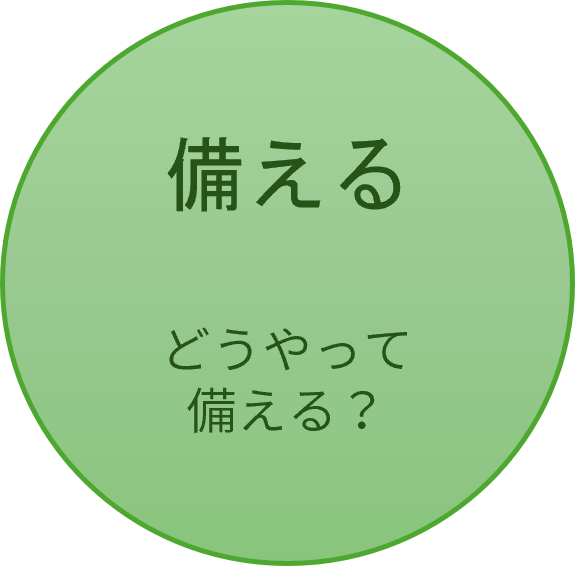
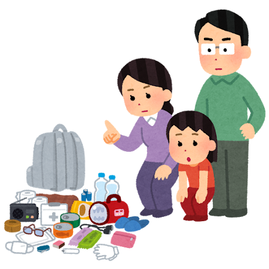
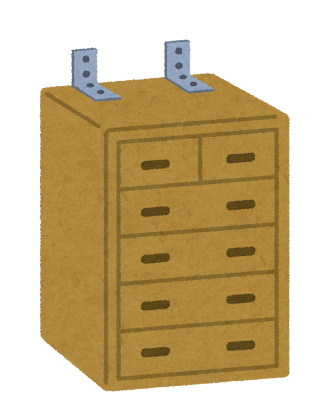

災害が起きてからでは間に合いません。
命と生活を守るために、今すぐできる4つの準備を始めましょう。
1. 備蓄と非常用持ち出し袋の用意
水害で自宅が浸水すると、建物が無事でも電気や水道が数日間止まります。
「自宅での生存用（3日分）」と「避難所への持ち出し用」の2つを準備しましょう。

自宅での生存用（最低3日分・推奨1週間分）
- 飲料水：1人あたり1日3リットル（3日分＝9リットル）
- 非常食：レトルト食品、缶詰など（火を使わないもの）
- 簡易トイレ：断水時に最も重宝します（1人1日5回分 × 3日分＝15回分が目安）
非常用持ち出し袋（避難時に足元を守り、情報を得る）
- 携帯充電器（モバイルバッテリー）：情報収集の命綱。常に満充電に。
- 防災用ヘルメット・帽子：上からの落下物から頭を守ります。
- 厚底の靴・踏み抜き防止インソール：割れたガラスや浸水した道路の障害物から足元を守ります。
- 懐中電灯・ランタン：夜間の避難や停電時の明かり。
2. 家の中の安全対策（家具の備え）
家が倒壊しなくても、家具の転倒でケガをしたり、避難経路が塞がれたりします。
- 家具の固定：突っ張り棒やL字金具で、タンスや冷蔵庫を壁に固定。
- 配置の工夫：寝室や出入り口の近くには、高い家具を置かない。
- ガラス飛散防止：窓ガラスや食器棚のガラスに飛散防止フィルムを貼る。

3. 家族同士の安否確認方法
災害時は携帯電話の回線がつながりにくくなります。事前に連絡ルールを決めましょう。
- 災害用伝言ダイヤル（171）：音声で安否を録音・再生するシステム。
- 災害用伝言板（web171）：インターネット経由で文字で安否を確認。
- SNSの活用：LINEやX（旧Twitter）など、複数の連絡手段を家族で共有。
- 最終集合場所の決定：「○○小学校の体育館前」など、具体的に決めておく。
4. 避難場所・避難経路の確認
ハザードマップを確認し、安全なルートを実際に歩いてみることが大切です。
- ハザードマップの確認：自宅や学校、職場が「浸水想定区域」や「土砂災害警戒区域」に入っているか調べる。
- 避難場所の特定：「指定緊急避難場所（すぐに逃げる場所）」と「指定避難所（生活する場所）」の違いを確認。
- 避難ルートのシミュレーション：昼間だけでなく、夜間や雨の日に危険な場所（側溝、アンダーパス、古いブロック塀）がないか歩いて確かめる。